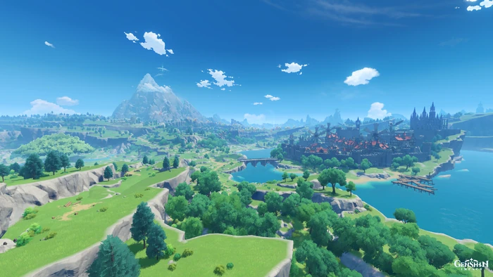
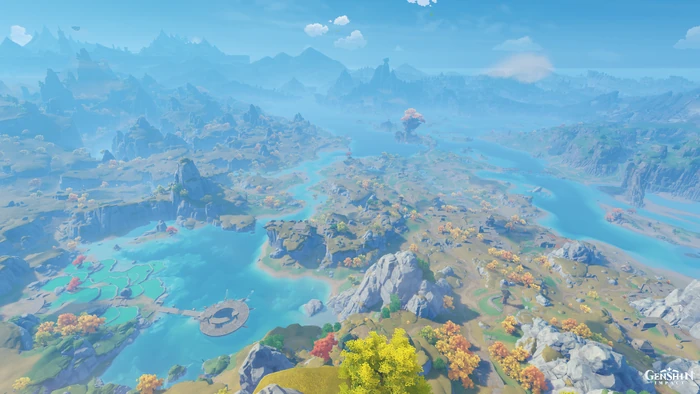
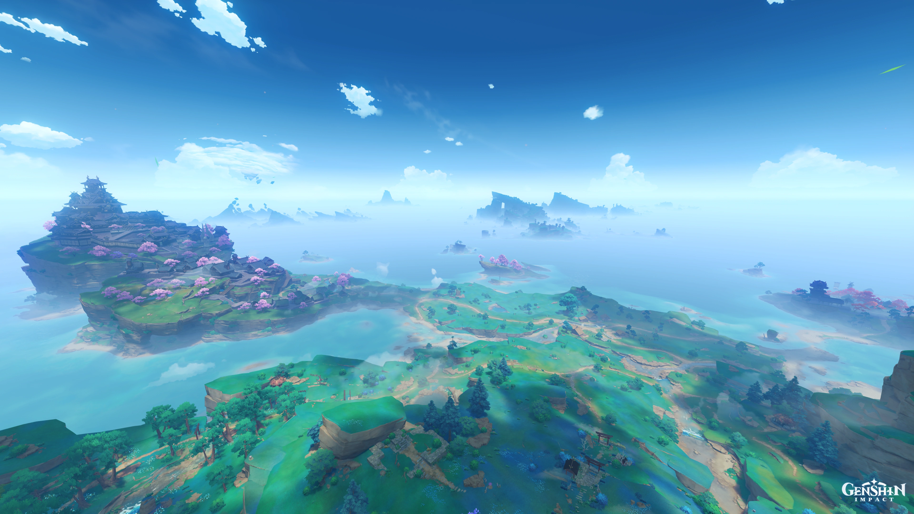
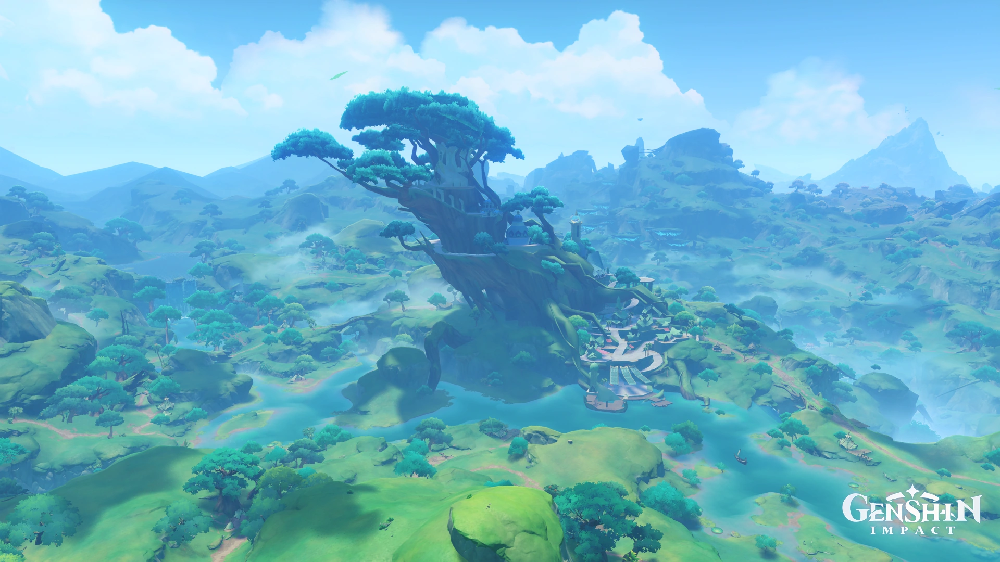
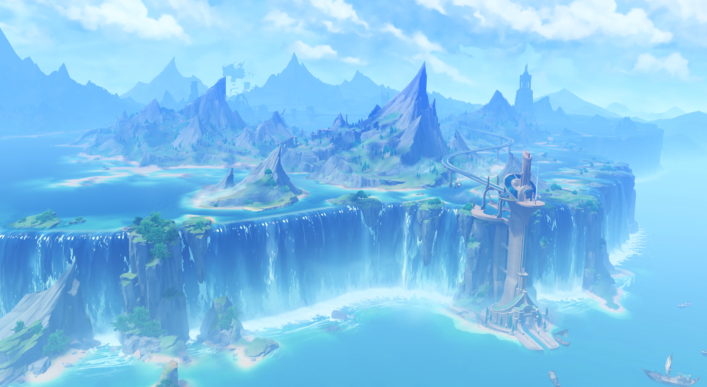

Genshin Impact adalah permainan yang bergenre dunia terbuka (open world) sekaligus bermain peran aksi. Pada permainan ini, pemain memungkinkan untuk mengendalikan salah satu karakter yang dapat digantikan di dalam sebuah party (kelompok). Karakter-karakter yang ditukarkan dapat dilakukan dengan cepat selama melakukan kombat sehingga memungkinkan pemain untuk menggunakan kombinasi kemampuan dan serangan yang berbeda. Karakter yang dapat memiliki kemampuan diperkuat dengan berbagai cara, seperti menaikkan level-nya secara langsung dan memperkuat artefak beserta senjata yang dapat digunakan oleh seorang karakter. Selain berpetualang, pemain dapat mencoba berbagai tantangan untuk mendapatkan hadiah. Pemain dapat melawan raja dan tantangan berhadiah di seluruh Pulau Teyvat, tetapi hadiah tersebut didapatkan dengan menggunakan mata uang yang disebut Original Resin. Menyelesaikan tantangan-tantangan tersebut mengabulkan progres pemain dengan cara meningkatkan Adventure Rank, yang dapat membuka misi baru, tantangan, dan menaikkan World Level. World Level adalah ukuran mengenai seberapa kuat musuh-musuh di dunia dan seberapa besar hadiah yang jarang didapatkan setelah mengalahkannya.
Karakter
Karakter dalam Genshin Impact adalah tokoh-tokoh dengan beragam kemampuan, senjata, dan gaya bermain yang berbeda-beda. Mereka adalah karakter yang membentuk tim atau party Anda dalam menjelajahi dunia terbuka Teyvat. Setiap karakter memiliki peran dan kemampuan yang unik, termasuk serangan dasar, serangan baku, kemampuan khusus, dan serangan elemental yang berbeda-beda. Selain itu, karakter juga memiliki atribut dan statistik individu yang mempengaruhi performa mereka dalam pertempuran.
Anda dapat mengganti karakter yang aktif di dalam party Anda sesuai dengan kebutuhan dan strategi pertempuran. Ini memungkinkan Anda untuk menciptakan kombinasi yang berbeda-beda dari karakter dan elemen mereka untuk menghadapi musuh-musuh yang beragam di seluruh Teyvat. Pemilihan karakter yang tepat dan kerja sama antara karakter-karakter dalam party Anda menjadi kunci kesuksesan dalam mengatasi tantangan-tantangan dalam permainan ini.
Karakter dalam Genshin Impact juga memiliki cerita dan latar belakang yang mendalam, sehingga pemain dapat menjelajahi lebih dalam tentang siapa mereka, mengapa mereka berada di Teyvat, dan bagaimana mereka berinteraksi dengan cerita utama permainan.
Selain karakter utama yang dapat Anda kendalikan, terdapat juga karakter non-playable (NPC) yang berperan dalam narasi permainan dan memberikan misi serta quest tertentu kepada pemain. Karakter-karakter ini beragam dan berkontribusi pada keberagaman dan kekayaan cerita dalam Genshin Impact.
Senjata
Senjata dalam Genshin Impact memiliki peran yang sangat penting dalam menentukan kemampuan dan gaya bermain karakter Anda. Ada beberapa jenis senjata yang berbeda yang dapat digunakan oleh karakter, seperti pedang, tombak, busur, tongkat, dan katalis (catalyst). Setiap jenis senjata memiliki statistik dan karakteristik yang unik, dan pemilihan senjata yang tepat dapat memiliki dampak signifikan pada kinerja karakter dalam pertempuran.
Selain jenis senjata, senjata juga memiliki tingkatan bintang yang menentukan kualitas dan potensinya. Senjata dengan bintang lebih tinggi memiliki statistik yang lebih kuat dan seringkali efek khusus yang unik. Untuk meningkatkan dan memperkuat senjata, Anda dapat menggunakan material yang ditemukan di seluruh dunia Teyvat.
Dalam permainan ini, Anda dapat memperoleh senjata baru melalui berbagai cara, termasuk gacha system (Wish system), penghargaan dari misi dan pencapaian, dan berbagai kegiatan dalam game lainnya. Pemilihan senjata yang sesuai dengan karakter dan strategi Anda merupakan elemen penting dalam mencapai keberhasilan dalam pertempuran dan menjelajahi dunia Teyvat.
Selain senjata biasa, terdapat juga senjata berwarna lima bintang yang dikenal sebagai senjata 5-star yang sangat langka dan kuat. Mereka seringkali menjadi target utama dalam sistem gacha game ini, dan pemain berusaha untuk memperoleh senjata 5-star untuk meningkatkan kekuatan karakter mereka.
Penting untuk memahami peran dan kemampuan senjata serta bagaimana mereka berinteraksi dengan karakter dalam permainan ini untuk merencanakan strategi pertempuran yang efektif.
Region
Dalam Genshin Impact, "region" mengacu pada wilayah-wilayah besar di dalam dunia game yang memiliki latar belakang, budaya, musik, karakteristik geografis, dan cerita yang unik. Setiap region dalam permainan ini memiliki karakteristik yang berbeda dan terbagi menjadi berbagai area dengan elemen-elemen khasnya sendiri. Berikut adalah beberapa contoh region dalam Genshin Impact:
- Mondstadt 
- Liyue 
- Inazuma 
- Sumeru 
- Fontaine 
Mondstadt adalah region pertama yang diperkenalkan dalam permainan ini. Ini adalah wilayah dengan tema Eropa Barat yang indah, dikenal dengan lanskap pegunungan, dan kota pelabuhan terkenal bernama Mondstadt. Region ini juga memiliki elemen angin sebagai tema utama dan berfungsi sebagai rumah bagi karakter-karakter seperti Venti dan Jean.
Liyue adalah region dengan pengaruh budaya Tiongkok yang kuat. Terletak di selatan Mondstadt, Liyue memiliki lanskap pegunungan batu kapur yang spektakuler, sungai-sungai, dan kota-kota yang makmur. Salah satu karakter utama dari Liyue adalah Ningguang.
Inazuma adalah region dengan tema Jepang yang diperkenalkan kemudian dalam permainan. Ini adalah wilayah yang misterius dan tertutup dengan pemerintahan yang ketat. Region ini dikenal dengan petir, samurai, dan kuil-kuilnya yang indah.
Sumeru adalah salah satu region yang akan diperkenalkan di masa depan. Ini adalah region dengan tema India dan dikenal dengan pengetahuan dan filsafat.
Fontaine adalah region yang bertemakan di Eropa timur, hal yang paling ikonik di region ini adalah kita dapat menyelam ke dalam perairan yang ada di region ini. Region ini bertemakan keadilan. Di sini terdapat bangunan khusus untuk melakukan peradilan.